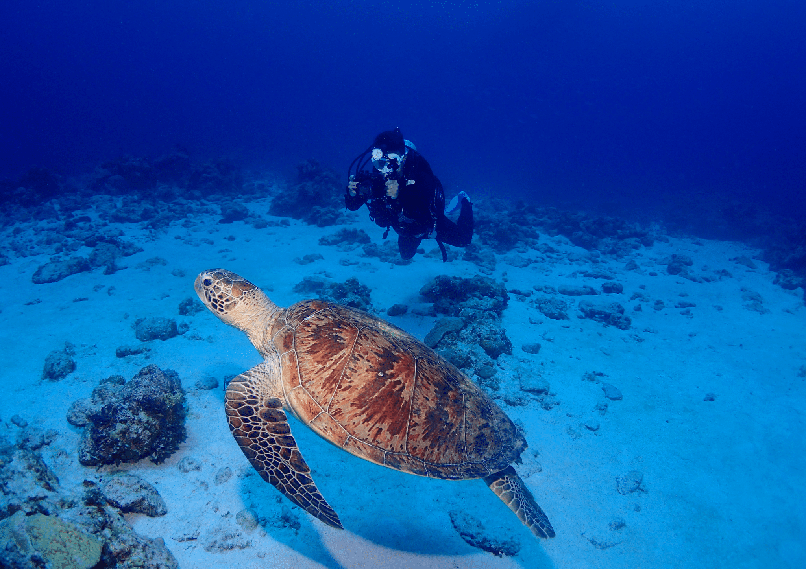

Scuba diving in Okinawa: a first-timer guide
This post may contain affiliate links. It means I may earn a commission if you book or purchase something. This is at no cost to you and support this website.
The Okinawa Prefecture, in the southernmost province of Japan, counts three main archipelagos: the Okinawa Islands, the Miyako Islands and the Yaeyamaislands, forming all together the Ryukyu Islands. I know it can be confusing but try to differentiate Okinawa Island, the Okinawa Islands, the Okinawa Prefecture!
Before becoming a Japanese Prefecture in 1879, Okinawa used to be an independent country: the Ryukyu Kingdom. From the 15th Century, the Ryukyu Kings were paying tribute to the Chinese Emperor. Hence there is a strong Chinese influence in the local Okinawan culture. After the painful events Okinawa went through during WWII, there is no doubt that you are in Japan when you walk in the streets of Naha today, but with a twist.
Okinawa is one of these places where it is not so straightforward to organise a scuba diving trip. There are so many islands in the prefecture of Okinawa, so many scuba diving experiences, at different periods of the year: it became somehow overwhelming to answer “What? Where? When?” As this was the first trip of a long series to Okinawa Prefecture, I thought a first-timer guide to scuba diving in Okinawa would make sense!